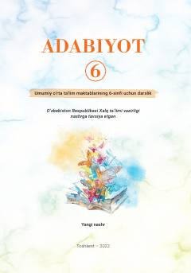

A66-sinf o'quvchilari uchun mo'ljallangan adabiyot fani darsligi.
Mazkur darslik umumiy o'rta ta'lim maktablarining 6-sinf o'quvchilari uchun mo'ljallangan bo'lib, badiiy matnni tahlil qilish bosqichlari va turli adabiy asarlarni o'rganishga bag'ishlangan. Kitobda o'zbek va jahon adabiyoti namunalari asosida o'quvchilarning tahliliy fikrlash qobiliyatini rivojlantirish ko'zda tutilgan.